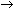

Математична модель оптимізаційної задачі
У багатьох задачах вимагається не просто знайти який-небудь розв'язок, а підібрати серед усіх розв'язків найкращий (оптимальний). Йдеться про такі задачі, як підбір збалансованого раціону харчування, оптимізація асортименту продукції, оптимізація транспортних перевезень та багато інших – їх ще називають оптимізаційними.
Перш ніж приступати до розв'язування оптимізаційної задачі, потрібно описати її в математичному вигляді, тобто побудувати її математичну модель. Модель оптимізаційної задачі складається з таких елементів:
- змінні – невідомі величини, значення яких потрібно знайти в результаті розв'язання задачі;
- цільова функція – величина, яка залежить від змінних і значення якої потрібно максимізувати чи мінімізувати;
- критерій – вимога мінімізації чи максимізації цільової функції.
- обмеження – умови, яким мають задовольняти змінні.
Найпростішою оптимізаційною задачею вважається задача пошуку максимального або мінімального значення функції однієї змінної. Наведемо приклад математичної моделі такої задачі:
Тут змінною є х, цільовою функцією – f(x), критерієм – вимога мінімізації ( min), а обмеженнями – .
Добре дослідженим та важливим для планування виробничих процесів різновидом оптимізаційних задач є задачі лінійного програмування (ЗЛП), тобто задачі, в яких цільова функція та обмеження є лінійними. У загальному випадку математична модель ЗЛП має такий вигляд:
Тут x1, ..., xn – змінні; aij, bi та ci – деякі числа; (1) – цільова функція разом із критерієм; (2) і (3) – обмеження. Зазначимо, що обмеження (3) називаються прямими, а обмеження (2) – непрямими. У непрямих обмеженнях замість знаків «» можуть стояти знаки «» або «=». Крім того, можуть накладатися додаткові обмеження, наприклад, може вимагатися, щоб змінні були цілочисельними.
Загалом алгоритм розв'язання оптимізаційної задачі такий.
- Введення позначень. Потрібно визначити, яка змінна яку величину позначатиме.
- Створення цільової функції та критерію. Слід визначити, яка величина максимізуватиметься чи мінімізуватиметься, та записати формулу залежності цієї величини від змінних, тобто формулу цільової функції. Нею може бути вартість продукції, обсяг прибутку, обсяг витрат на виробництво та перевезення.
- Складання системи обмежень. Обмеження – це нерівності або рівності, яким мають задовольняти значення змінних.
- Розв'язання задачі. Деякі оптимізаційні задачі можна розв’язати аналітично, без використання комп'ютера, проте цей спосіб надто трудомісткий. Далі ви навчитеся розв'язувати такі задачі засобами табличного процесора. Це будуть як задачі на пошук екстремуму функції однієї змінної, так і задачі лінійного програмування.